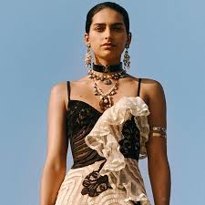
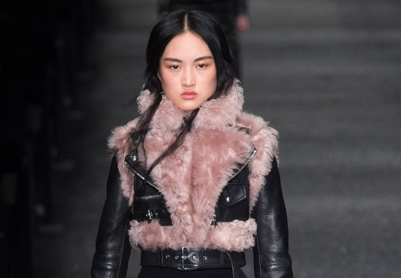

ALEXANDER MCQUEEN
El 17.03.69 nació en Londres Lee Alexander McQueen, en el seno de una familia de clase trabajadora, su padre, Ron, taxista y su madre, Joyce, profesora de ciencias. Su padre pretendía que se convirtiese en fontanero o electricista, pero la moda se interpuso y decidió formarse para convertirse en uno de los modistos más visionarios de los últimos años. Por ello decidió dejar el colegio cuando tenía 16 años para entrar como aprendiz en la sastrería Anderson & Sheppard, más tarde trabajó en Gieves & Hawkes y para la compañía de vestuario teatral Angels & Bermans. También fue ayudante de los diseñadores Koji Tatsuno y de Romeo Gigli en Milán.

HISTORIAL
PRIMAVERA VERANO 2002: La colección primavera/verano 2002 de Alexander McQueen para su propia marca, la primera tras la adquisición de la mitad más uno de la firma por parte del todopoderoso grupo PPR, tuvo lugar pocos días después de los atentados del 11 de septiembre del 2001. En ese clima de malestar, rabia y confusión, The Dance of the Twisted Bull –ese fue el nombre de la colección– se presentó en París entre humo y gemidos. La polémica, compañera del creador durante toda su carrera, estaba servida. “La moda nunca debe ser políticamente correcta, de lo contario nunca sería revolucionaria”, puntualizaría. Y ese adjetivo, el de revolucionario, es uno de los que mejor le sientan a Alexander McQueen y, por ende, a su marca, indisociable de su epatante, compleja y arrolladora identidad.

IDENTIDAD
Entre las características marcas de la casa, una búsqueda constante de individualidad y prendas destinadas a mujeres de marcada personalidad. Las brujas de Salem, la estética militar, la taxidermia y la violencia fueron para McQueen referentes esenciales para lograr esa independencia estética. Esta frase del propio Alexander define a la perfección su irrefrenable búsqueda de libertad: “La moda debería ser una forma de escapismo, no de aprisionamiento”.